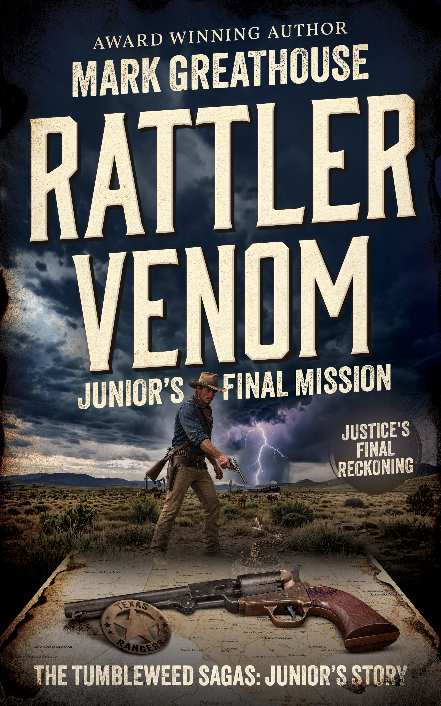
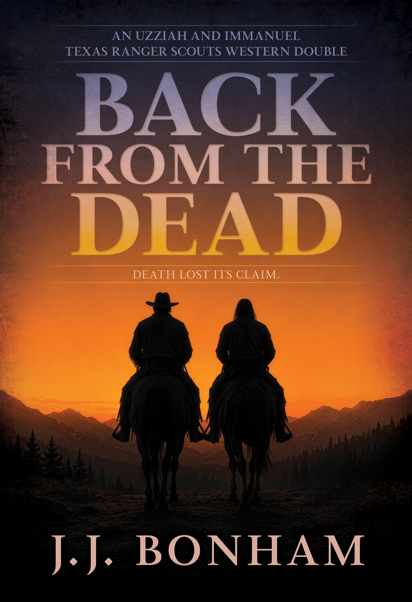

| View in browser |
 |
New from Wolfpack Publishing: two action-packed Westerns of Texas Rangers, frontier justice, deadly cattle wars, and partners who refuse to stay buried—or retired.Rugged stories for readers who like dust, danger, secrets, and no wasted motion. |
|

Rattler Venom: Junior’s Final Mission (The Tumbleweed Sagas: Junior’s Story 14)by Mark Greathouse
Lucas Dunn, Jr. hung up his Texas Ranger badge, but Mexican rebels stealing oil from his land force him back into the fight. An undercover mission into revolutionary Mexico and a ruthless cattle-rustling operation push him toward one final reckoning. Words from Mark Greathouse Despite having a home office decorated to channel my inner cowboy, I do most of my writing in coffee houses. Patrons may wonder what the fellow in boots is doing on that laptop; the answer is wrestling with the Western trope of good triumphing over evil. In Rattler Venom, evil appears in both the poison of a rattlesnake and the darkness of human souls. Rustlers, thieves, and killers abound. Fiction lets me create problems and solve them—sometimes as directly as Texas Ranger Lucas Dunn, Jr. facing the rattler that strikes his son. While my lawmen confront complicated evil minds, the West still yields its bounty to those willing to seize its opportunities and endure what it demands. If you find me at your local coffee house, rest assured I am working on putting a whipping on evil—and on the hope that can emerge from adversity. —Mark Greathouse
Get Your Copy →
|
| |

Back from the Dead (Uzziah And Immanuel: Texas Ranger Scouts 1)by J.J. Bonham
Uzziah O'Bannon buried Immanuel James Jones, but Immanuel refuses to stay dead. Reunited as Texas Ranger scouts, the two old mountain men ride into a brutal cattle war and pursue an empire-builder protected by money, distance, and hired guns. Words from J.J. Bonham Back from the Dead exists because readers did not want Immanuel's story to end. My wife, Judy Lynn Bonham, has watched soap operas for sixty years and has an uncanny feel for plot. When Immanuel's death approached, she offered the simple solution: bring him back to life. That suggestion opened a path filled with resonant details—the names Immanuel and Emmanuel, the symbolism of resurrection, and the curious way a writer's intentions can grow into something larger. Fiction often surprises its own author. What begins in one place may end somewhere entirely different and still remain, at heart, a love story. In Back from the Dead, Immanuel returns and rejoins Uzziah where readers wanted them: back in the saddle, riding together as Texas Ranger scouts. Maybe the parallels are coincidence; maybe not. Either way, these two old partners are once again where they belong. —J.J. Bonham, Jack, just one of the J's
Get Your Copy →
|
|
Wolfpack Publishing 1707 E. Diana Street, Tampa, FL 33610 Website Unsubscribe |
|